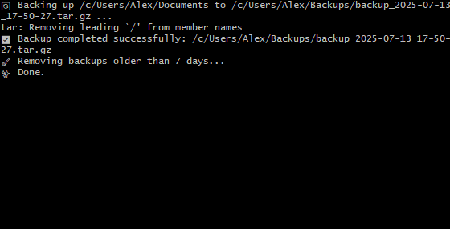
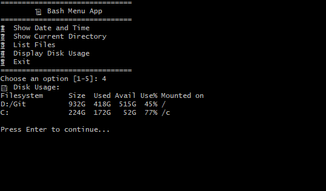

🐚 Shell Scripting Mini Projects
Want to flex those Bash skills? Here are some classic project ideas and awesome open-source Bash repos to dissect and learn from.
🔥 Project Ideas

Automated Backup Script

Interactive Menu Script
📂 Top 5 Shell Scripting GitHub Projects